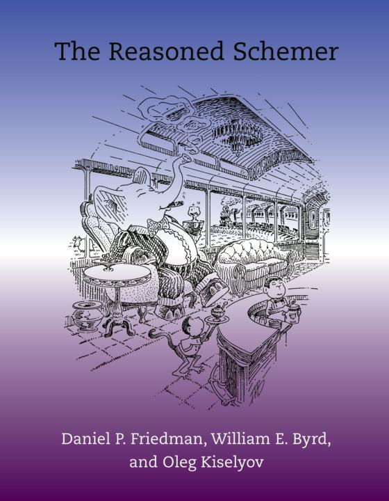

Clojure
lvh
_@lvh.io
Introduction
Who am I?

Rackspace
Python

More importantly: Clojure!

Who are you?
- Experience with FP? Lisps? Clojure?
What’s Clojure?
(apply modern-lisp @jvm)
Big ideas
Immutability by default
- Default types are immutable
- You can alway import
ArrayList - unfortunately also
Date:-(
Functional programming
“85% functional”
Java interoperability
The value of values
Values are immutable!
“No-one can cross the same river twice”
“Simple” values
- Java:
BigInt,BigDecimal… - Python:
int,float…
“Complex” values
E.g. collections
- Java:
ArrayList,HashSet,HashMap… - Python: list, set, map…
Concurrency
STM
Transactions (ACI, not D)
STM example
@Raw
Macrology
Code ≡ data
Many basic “language features” are macros:
defn, if, and…
(Just like Racket)
Domain specific languages
- Default Lisper behavior
Polymorphism
Some polymorphism: Protocols
More polymorphism: multimethods
OOP
x.m(a, b, c)
Which m?
Single dispatch
mdepends on type ofx- Java, C++, C#…
Bit more complicated in Python
Not just type of x, but:
- per-instance overrides
__getattr__,__getattribute__hacks
Fundamentally, x still decides what m means!
“Sending a message”
(Smalltalk parlance)
x <- m(a, b, c)
No interesting differences
- Logic is fixed
- Always more or less
fn(type(x))
Single dispatch not always enough
Multimethods to the rescue
Routing logic: any function!
core.logic
The Reasoned Schemer
Conclusion
A modern, pragmatic Lisp
Don’t learn Clojure!
Going back is painful ;-)